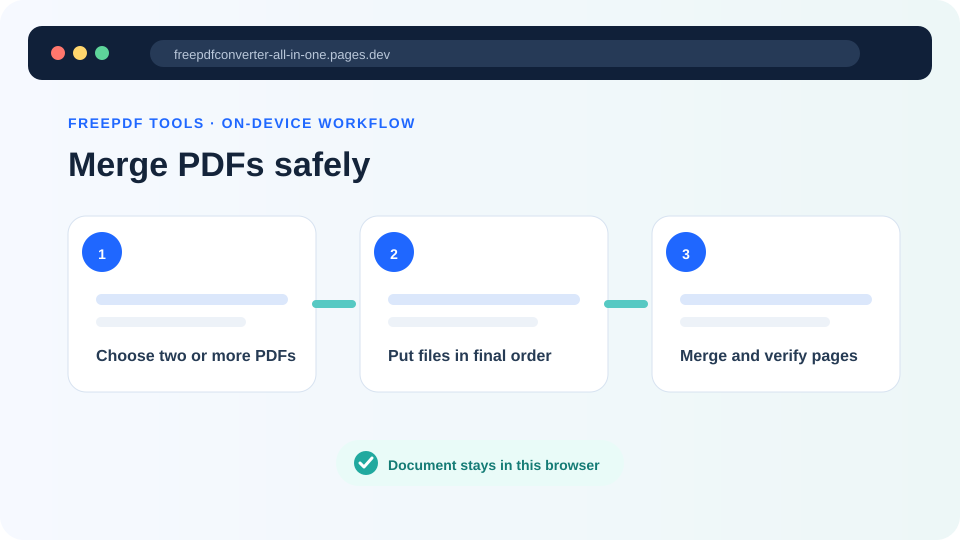
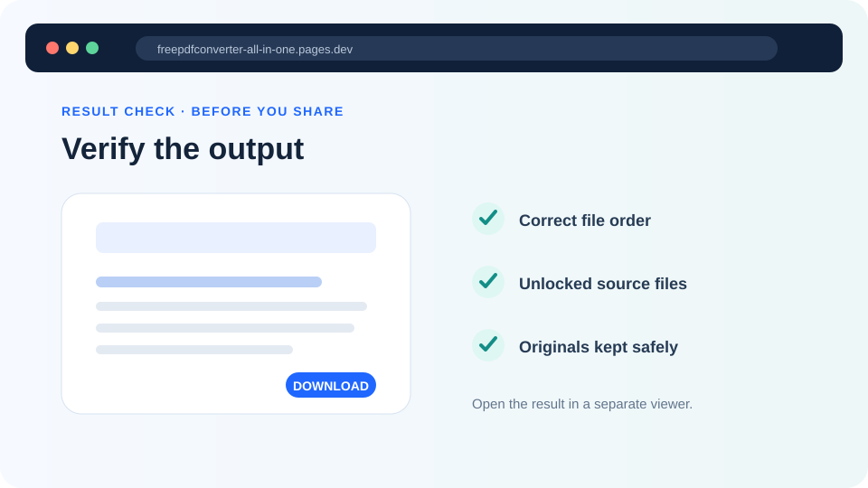

How to merge PDF files safely without losing quality
Combine a cover page, report and attachments into one ordered PDF while keeping the original page content as clear as possible.
Updated August 11, 2026 · By FreePDF Tools · 6 minute read


What to check before merging PDFs
Merging creates a new PDF containing pages copied from two or more source files. Start by opening every source document and checking its page order, orientation and completeness. Rename the files in a way that makes their intended sequence obvious, such as 01-cover.pdf, 02-report.pdf and 03-appendix.pdf.
A4, US Letter, landscape and custom-sized pages can exist together in the same PDF. A merge operation normally preserves those sizes rather than forcing every page onto one paper format. If a page is sideways, rotate it before or after merging; changing file order will not correct orientation.
How to merge PDF files in your browser
- Open the Merge PDF tool.
- Select at least two PDFs or drag them into the file area.
- Review the numbered list. Use the up and down controls until the files are in the required order.
- Select Merge PDFs and leave the browser tab open while the pages are copied.
- Open the downloaded merged.pdf and verify page order, orientation and readability.
Ready to combine your documents?
Files are processed locally in your browser and are not uploaded to our application server.
Will merging reduce PDF quality?
The FreePDF Tools merger copies PDF pages into a new document rather than taking screenshots of them. Text, vector shapes and existing page images therefore avoid an intentional page-wide raster conversion. This is why zoomed text should remain sharper than it would after turning every page into a JPG.
However, a new PDF is not always an exact container-level clone. Advanced features such as bookmarks, embedded attachments, forms, layers or document-level scripts may not carry across in the same way as visible page content. Digitally signed PDFs should not be edited: creating a new merged document does not preserve the validity of the original document signature.
Large PDFs and browser memory
Local processing uses your device's memory. Several image-heavy scans can require much more memory than their file sizes suggest after decoding. If a phone tab closes or the merge fails, use a laptop, close unused tabs, or merge smaller batches first and combine those results in a final pass.
Common merge problems and fixes
| Problem | Likely reason | What to try |
|---|---|---|
| The PDF will not open | The file is encrypted, damaged or not really a PDF | Open it in a trusted PDF reader and save an unlocked copy if you have permission |
| Pages are in the wrong order | The source-file order was incorrect | Return to the originals, reorder the numbered list and merge again |
| Some pages are sideways | The source page already had the wrong rotation | Use Rotate PDF on the affected page range |
| The browser runs out of memory | The decoded documents are too large for the device | Use fewer files per batch or move to a device with more memory |
| Bookmarks or signatures changed | A new PDF document was created | Retain the original signed files and use specialist software when those features must be preserved |
Privacy considerations
For ordinary merging, local browser processing avoids transmitting the selected document bytes to our application server. The browser still downloads the website and its open-source PDF library, but the files you choose remain in the tab's local memory. This model reduces upload and server-retention exposure; it does not replace your normal device security, encrypted storage or careful handling of sensitive documents.